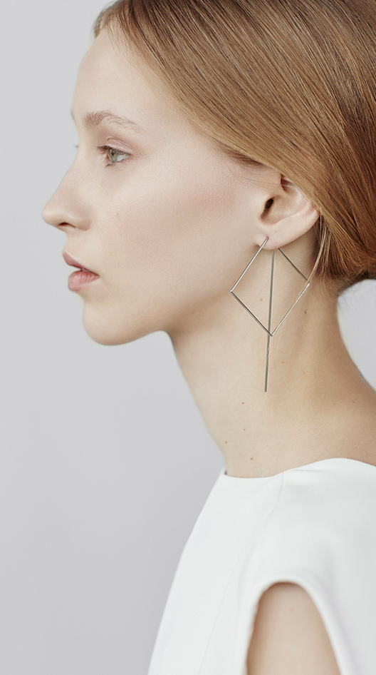

<!DOCTYPE html>
<html lang="en">

<head>
    <meta charset="UTF-8">
    <meta http-equiv="X-UA-Compatible" content="IE=edge">
    <meta name="viewport" content="width=device-width, initial-scale=1.0">
    <title>Agata Bielen</title>
    <link rel="stylesheet" href="../shared.css">
    <link rel="stylesheet" href="main.css">

</head>

<body>


    <div class="navigation">
        <div id="navigation__line--top-left"></div>
        <div id="navigation__previous">Previous</div>
        <div id="navigation__name">Agata Bielen</div>
        <div id="navigation__next">Next</div>
        <div id="navigation__line--top-right"></div>
        <div id="navigation__left-line"></div>
        <div id="navigation__twitter">Twitter</div>
        <div id="navigation__instagram">Instagram</div>
        <div id="navigation__date">2016.06.13</div>
        <div id="navigation__line--bottom-left"></div>
        <div id="navigation__author">by Jana Ahrens</div>
        <div id="navigation__collection--title">Coll. N°1</div>
        <div id="navigation__see-all"><a href="../index.html">See-all</a></div>
        <div class="navigation__collection--numbers">
            <div id="active__collection">01</div>
            <div id="navigation__line--side-right"></div>
            <div id="inactive__collection">
                <p>02</p>
                <p>03</p>
                <p>04</p>
            </div>

        </div>
        <div id="ellipse"></div>
        <main>
            <div id="page__title">Right Line</div>
            <div id="collection__description">
                <div id="collection__description--line"></div>
                <p>The line broken, bent and bonded in space, creates three-dimensional forms. This very simple statement on geometry and technique is one of Agata Bieleń’s elemental design principles. And the Poland based jewellery designer makes sure
                    to come closer and closer to this principle with every collection she creates. For Spring/Summer 2016 she focusses on the optical illusion created by fine lines running through space, more broken than bent or bonded. That’s why the
                    collection bears the name Right Line.</p>
            </div>
            <div class="left__section">
                <div class="rectangle"></div>
                <div class="collection__image">
                    
                </div>
            </div>
        </main>
</body>

</html>